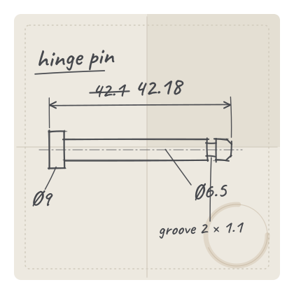
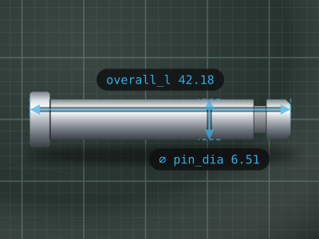

Beta testers wanted · iPhone
Calipers in.
CAD out.
Photograph each face of a part, tap two edges, and read your caliper — or let a Bluetooth caliper type the reading for you. Snapkin keeps every number on a dimensioned photo and hands them to Fusion as named parameters.
Runs in Safari — no App Store, no account. Your parts stay on your phone.

How it works
The loop you already do, minus the notepad.
-
01
Snap each face
Top, side, end: one photo per face, from the camera or your library.
-
02
Tap two edges
Edge snap lands each tap on the part’s edge. Drag a handle to fine-tune.
-
03
Read the caliper
Type the reading, or press the data button on a Bluetooth caliper.
-
04
Name the feature
Pick a suggestion or type your own. Save, and the next tap starts the next one.
The rule
The photo is never measured.
A phone camera can’t give you ±0.05 mm, so Snapkin doesn’t pretend to. Every number is a reading you took with the part in your hand. The photo is the sketch that shows where each number goes.

Says where.
Which face, which edge, what the feature is called.
Says how much.
42.18 mm ±0.10, from the jaws, not the pixels.
Export
One tap to Fusion.
Export packs the part into one zip: every face’s photo and its dimensioned PNG, features.json and parameters.csv.
Named parameters, no retyping
Import parameters.csv with Autodesk’s free Parameter I/O add-in, and every feature becomes a user parameter: overall_l, pin_dia, wall.
Or let an AI agent lay it out
features.json carries everything: faces, photos, values, tolerances. With a Fusion connection over MCP, an assistant can add the parameters and a sketch per face with its photo as a canvas.
No Fusion? Still useful
The PNGs are the tidy version of your napkin sketch. Print them, file them, send them to whoever’s making the part.
hinge_pin.ccpart.zip
- ├─faces/top.jpg
- ├─faces/top_dimensioned.png
- ├─ … side, end: the same
- ├─features.json
- └─parameters.csv
parameters.csv
| name | expression | comment |
|---|---|---|
| overall_l | 42.18 mm | ±0.1 mm · faces top |
| pin_dia | 6.51 mm | ±0.05 mm · faces top |
| head_dia | 9 mm | ±0.05 mm · faces side |
| groove_w | 2 mm | ±0.05 mm · faces end |
| groove_depth | 1.1 mm | ±0.05 mm · faces end |
Details
Made for the bench.
Bluetooth calipers
If it pairs as a keyboard, readings type themselves in. Press the data button, done.
Edge snap
Taps land on the nearest edge of the part. One tap on Snap turns it off.
No account, no cloud
Parts live on your phone. Nothing to sign in to, nothing uploaded.
Works offline
Add it to your home screen and it runs without signal, like any app.
Folders
Keep parts by project, six levels deep: Miata / Interior / Door.
Millimetres or inches
Per part. Two decimals in mm, three in inches.
Tolerances
±0.10 mm or ±0.005 in by default, set per feature when it matters.
Catches conflicts
The same feature measured two different ways is flagged before it reaches CAD.
Demo · 66 seconds
Watch one part, start to finish.
Recorded straight from the app.
- New part, units set to millimetres
- Photograph the top face
- Tap two edges, read the caliper, pick a name
- Save, back out, export the zip
Beta
Join the beta.
I’m looking for people who reverse-engineer small parts — clips, brackets, knobs, pins — for 3D printing, repairs and restorations. You get the app, a direct line to me, and a say in what gets built next.
- An iPhone. It’s built and tested on one, but other phones are welcome.
- A caliper: digital, dial or Bluetooth.
- A part that needs measuring.
FAQ
Questions.
Is it in the App Store?
No. Snapkin is a web app. Open the link in Safari, tap Share, then Add to Home Screen, and it runs like any other app, offline included.
Does it measure from the photo?
Never. The numbers come from your caliper. The photo only shows where each one goes, so a blurry or angled shot can’t make a dimension wrong.
Which calipers work?
All of them: you can always type the reading. A Bluetooth caliper that pairs with your phone as a keyboard (often called HID mode) types it for you when you press its data button. Calipers that only talk to their own app won’t.
Do I need Fusion?
No. Every export has a dimensioned PNG per face and a CSV you can open anywhere. If you do use Fusion, the CSV imports as named user parameters with Autodesk’s free Parameter I/O add-in.
Where do my parts live?
On your phone, in the browser’s own storage. There’s no account and no server. Export a part any time to keep a copy.
What happens to my email?
It’s used for the beta and nothing else: an invite, a few updates, a request for feedback. It’s never sold or shared, and every email has a way out.